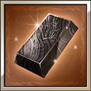
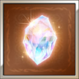
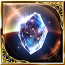

Most popular items

Use this gold brick to recruit new Eternals, uncap existing ones to 5 and 6 stars, and uncap Dark Opus Weapons to 5 stars

Use this damascus ingot to uncap SSR weapons. It is recommended to use them on meta grand and superlative weapons.

Use this sunlight stone to uncap SSR summons. It is recommended to use them on meta summons and Arcarum summons with damage amplifying sub auras.

Use this sephira evolite to recruit new Evokers.